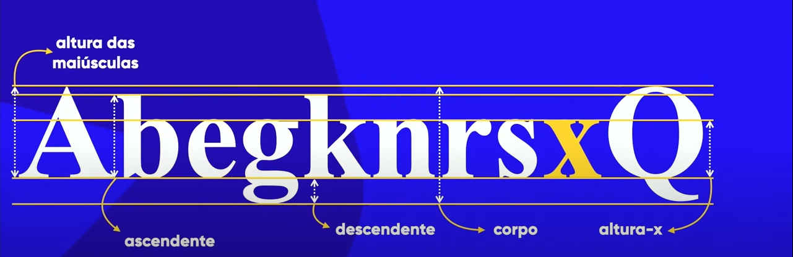
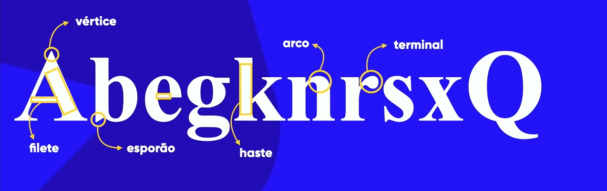

As partes de uma letra são chamadas de anatomia. Cada parte tem um nome específico, e entender esses termos é fundamental para a tipografia.
o X é o ponto de partida para a criação de todas as letras. Dessa forma a altura das letras se chama altura X
Resumo a seguir:
Outras caracteíristicas da letra como haste, filete, esporão e afins podem ser encontradas no resumo a seguir:
Glifos são as letras e o conjunto delas formam a fonte.
As fontes são divididas em serifadas e sem serifa. As serifas são as pequenas extensões que aparecem nas extremidades das letras. As fontes sem serifa não possuem essas extensões.
As fontes também podem ser classificadas em diferentes estilos, como sans-serif, serif, script, display, entre outros. Cada estilo tem suas próprias características e é utilizado para diferentes propósitos.
Usar textos longos sem serifas, papel impresso com serifas, usar cores contrastantes (complementares) para facilitar a leitura do site.
Quando eu digito uma fonte, ele me dá safe combinations, ou seja, a primeira que aparece é a que ele vai tentar, se nao tiver essa fonte no dispositivo ele tentará a procima e assim por diante.
Se eu quiser saber quais fontes são correlatas posso entrar neste site
cm, mm, in, px, pt, pc
recomendação é usar PX para fixa e EM para relativa. 16 pixels é o padrão de tamanho de fonte em navegadores, então 1em = 16px.
quando eu for pensar em peso da fonte posso usar dentro do style o font weight podendo definir entre:
pensando em estilo de fonte eu posso usar o font style e definindo entre:
para usar fontes da internet (precisa estar conectado), posso usar o Google Fontes. Lá eu posso escolher e filtrar as fontes e importar elas para estilo em CSS. Clicar em EMBED, import e colar ela dentro do STYLE e fora de qualquer seletor. Em seguida, dentro do seletor que eu criar eu posso colocar o nome dela entre aspas. Exemplo: font-family: 'Roboto', sans-serif. Exemplo na aba CSS
para baixar fontes, posso usar o Dafont. Lá eu posso escolher e filtrar as fontes e baixar elas para o meu computador. Depois disso, eu posso instalar a fonte no meu computador e usar ela normalmente em qualquer programa que suporte fontes personalizadas. Devo prestar atenção se contem todos os Glifos, maiúsculo e minúsculo, inclusive com os acentos.
para usar fontes de outro site, baixo elas, coloco na pasta do projeto (otf, ttf ou outro formato) e coloco uma tag @font-face no meu CSS. Nesta tag, no campo URL eu escrevo entre aspas o nome exato do arquivo com a extensão e no format eu escrevo o tipo de formato daquele arquivo. Exemplo: @font-face { font-family: 'Nome da Fonte'; src: url('nome-da-fonte.ttf') format('truetype'); }. (exemplo na aba css)
Posso adicionar mais de um arquivo, com virgula e repetindo as mesmas propriedades em seguida.
Posso usar o plugin do chrome chamado font ninja e descobrir tudo sobre aquela fonte, como nome, tamanho, peso e estilo. Além disso, posso baixar a fonte e usar ela no meu computador com o serviço pago. Esse plugin nao funciona pra fontes dentro de imagens.
Posso usar os seguintes sites para descobrir:
Para mudar posições do texto eu uso o text allign e posso definir entre:
posso ainda usar o text indent para definir o recuo (parágrafo) do texto, o line height para definir o espaçamento entre linhas e o letter spacing para definir o espaçamento entre letras.